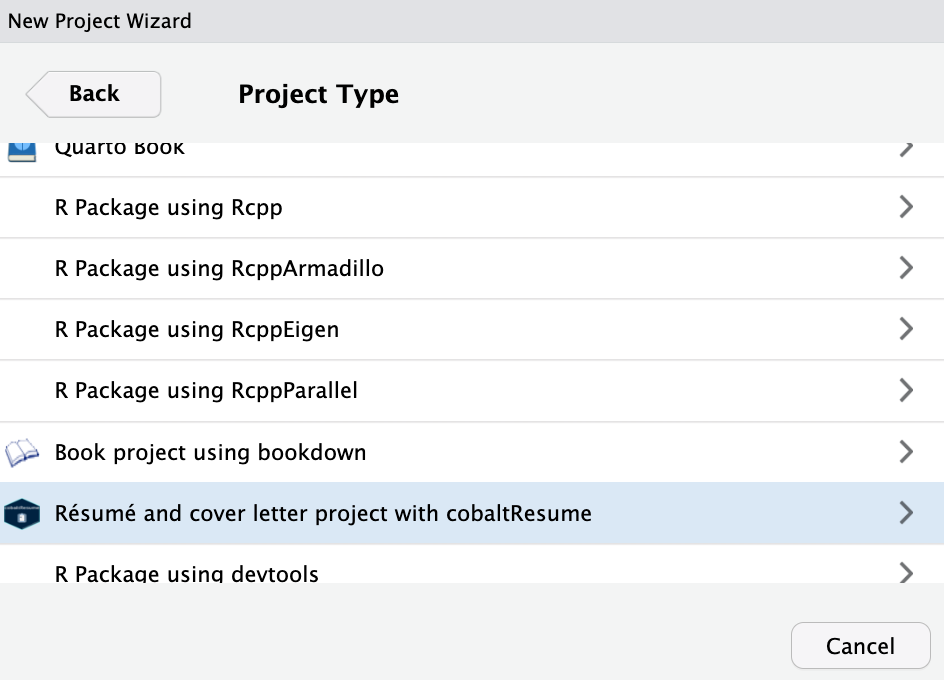
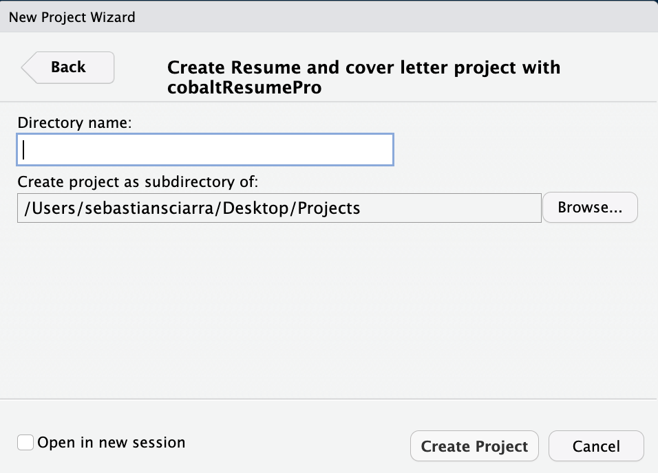
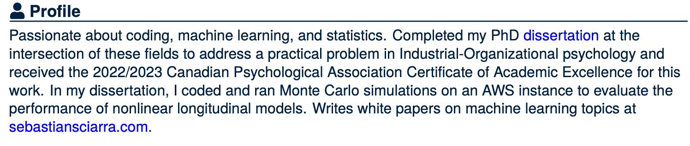
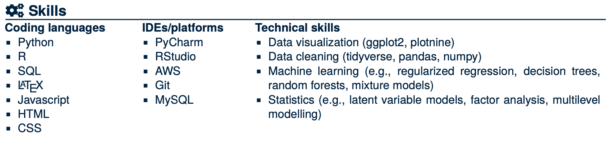

The cobaltResumePro is an update on the cobaltResumePro package and was designed to create resumes with a more streamlined and professional design (the design for the cover letters remained the same in the cobaltResumePro package). LaTeX code has been written in the cobaltResume.cls, cobaltCoverLetter.cls, cobaltResume.tex, and cobaltCoverLetter.tex files to format the resume and cover letter files. I have written my own resume and cover letter using cobaltResume, which can be viewed my resume. Note that the cover letter is populated with placeholder content. In the five sections that follow, I will explain the following components to using cobaltResumePro:
- Installation
- Project creation
- Creating a resume
- Creating a cover letter
- Merging the resume and cover letter into one PDF file
1) Installation
You can install the development version of cobaltResume GitHub and load it into your session with:
#install.packages("devtools")
devtools::install_github("sebsciarra/cobaltResumePro")
library(cobaltResumePro)2) Project creation
To create a cobaltResumePro template, click on File > New Project > New Directory. Then select Resume and cover letter project using cobaltResumePro from the drop-down menu as shown below.

Then, give your project a name and specify where you’d like the files to appear. In the screenshot below, the project name is my_resume_cover_letter will appear as a new folder on the Desktop.

3) Creating a resume
In the resume.Rmd file, a resume can be completed by using three features. First, information related to identification and skills can be included in the resume by filling in the appropriate YAML header variables shown below. Importantly, make sure that keep_tex: true, or else the PDF for the resume will not be created.
firstName: "firstName"
lastName: "lastName"
position: "Position" #job position being applied to
date: "date"
output:
pdf_document:
template: "cobaltResume.tex" #template file (do not change)
keep_tex: true
#hyperlinks (delete or leave blank blank if not necessary/do not exist)
#escape any special characters with two backslashes (for example, see email variable)
githubLink: "github.com/user" #link to GitHub
githubName: "githubHandle" #GitHub username
personalWebsite: "personalwebsite.com"
linkedinName: "firstName lastName"
linkedinLink: "linkedin.com/in/personal_link"
email: "email\\@domain.com"
#skills + citizenship
citizenship: "Citizenship status" #e.g., work permit/study permit/Permanent resident/citizen, etc.Second, sections accessorized with fontawesome5 icons (for a full list, see fontawesome5 icons). For example, \faSuitcase\ Employment results in the header shown below. Importantly, DO NOT change the section names.

Third, resume entries can be completed for each section using the corresponding R function. For each section, the following R function should be used:
- Profile:
create_profile_entry() - Skills:
create_skills_entry() - Education:
create_education_entry() - Selected white papers:
create_white_paper_entry() - Employment experience:
create_resume_entry() - Data science experience:
create_resume_entry()
create_profile_entry(profile_summary = "Passionate about coding, machine learning, and statistics. Completed my PhD \\href{\\detokenize{https://atrium.lib.uoguelph.ca/server/api/core/bitstreams/8ed1891d-58ca-457b-b0d4-33a015fb2db9/content}}{\\textcolor{blue}{dissertation}} at the intersection of these fields to address a practical problem in Industrial-Organizational psychology and received the 2022/2023 Canadian Psychological Association Certificate of Academic Excellence for this work. In my dissertation, I coded and ran Monte Carlo simulations on an AWS instance to evaluate the performance of nonlinear longitudinal models. Writes white papers on machine learning topics at\ \\href{https://sebastiansciarra.com}{\\textcolor{blue}{sebastiansciarra.com}}. \\newline")
create_skills_entry(coding_languages = c("Python", "R", "SQL", "\\LaTeX", "Javascript", "HTML", "CSS"),
ides_platforms = c("PyCharm", "RStudio", "AWS", "Git", "MySQL"),
technical_skills = c("Data visualization (ggplot2, plotnine)",
"Data cleaning (tidyverse, pandas, numpy)",
"Machine learning (e.g., regularized regression, decision trees, random forests, mixture models)",
"Statistics (e.g., latent variable models, factor analysis, multilevel modelling)"))Note that LaTeX code can be inserted and will be rendered. The above two examples produce the following two entries in the resulting PDF file:

4) Creating a cover letter
In the cover_letter.Rmd file, a cover letter can be completed by using three features. First, information related to identification and skills can be included in the résumé by filling in the appropriate YAML header variables shown below.
firstName: "firstName"
lastName: "lastName"
position: "Position" #job position being applied to
date: "date"
output:
pdf_document:
template: "cobaltCoverLetter.tex"
#hyperlinks (delete or leave blank blank if not necessary/do not exist)
#escape any special characters with two backslashes (for example, see email variable)
githubLink: "github.com/user" #link to GitHub
githubName: "githubHandle" #GitHub username
personalWebsite: "personalwebsite.com"
linkedinName: "firstName lastName"
linkedinLink: "linkedin.com/in/personal_link"
email: "email\\@domain.com"
#recruiter info
recruiterName: "Recruiter Name"
organization: "Organization Name"
organizationStreet: "200 Bay St."
organizationCityPostal: "Toronto, ON M5J 2J2"
#greeting/closing + citizenship
greeting: "Dear Mr./Mrs. Recruiter Name"
emailClosing: "Sincerely"
citizenship: "Citizenship status" #e.g., work permit/study permit/Permanent resident/citizen, etc.5) Merging the resume and cover letter into one PDF
To merge the resume and cover letter into one PDF, make sure that each .Rmd file exists in its own folder (as is the case when the project is first created). With the resume and cover letter .Rmd files in their own folders, they can be merged by specifying the knit YAML variable in either the résumé .Rmd and/or the cover_letter.Rmd file(s) such that